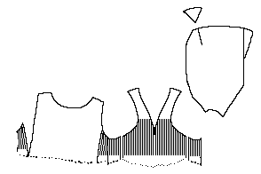
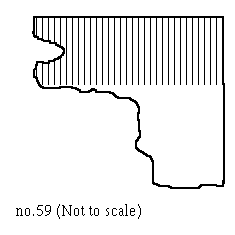

Pattern drawing based on N�rlundThis is a portion of a long-sleeved garment, with the portion below the waist missing. What remains is of a garment cut into front and back pieces, and two gores on each side. The neckline in front plunges. The side gores and front are covered in close vertical pleats 5 mm (.2") wide by 26 cm (10.2").
The sleeves are 49 cm (19.3") long with a slit at the wrists. The armhole is 55 cm (21.7") in circumference.
The fabric is a thin and open fourshaft twill with a black warp and a dark-brown weft.
It is *possible* (although unlikely) that the pleated scrap of Herjolfsnes no.59, is the pleated side gores of the shirt of this garment. The greatest length of no.59 is 47 cm (18.5") and 28 cm (11") with the pleats running across the upper quarter of the scrap for 12 cm (4.7"). The upper edge is turned under, but not sewn down.

Go to Tunic Page or Herjolsnes Site Page
Some Clothing of the Middle Ages -- Tunics -- Herjolfsnes 58, by I. Marc Carlson, Copyright 1997 This code is given for the free exchange of information, provided the Author's Name is included in all future revisions, and no money change hands-